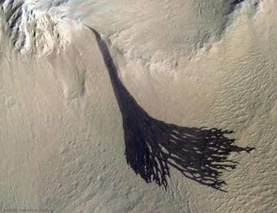

Landing on Mars
Since Rover's landing on Mars, Nasa has been conducting the Mars Oxygen In-Situ Resource Utilization Experiment, also referred to as MOXIE, which has allowed the space team to make oxygen from the planet's carbon dioxide-rich atmosphere and has seen a lot of success. MOXIE has been able to produce oxygen in a variety of atmospheric conditions during the planet's day and night, and through different Martian seasons.
